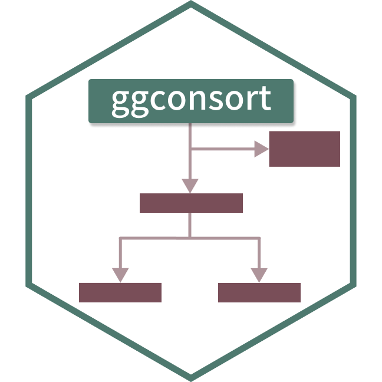
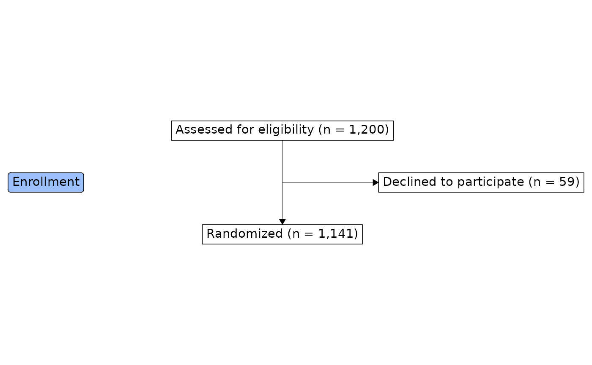

Add boxes, arrows, lines, and stage badges to a CONSORT diagram
Source:R/consort_arrow_add.R, R/consort_box_add.R, R/consort_line_add.R
consort_box_add.RdThese functions add the visual elements of a CONSORT diagram to a
ggconsort_cohort object, converting it to a ggconsort object
that can be plotted with ggplot2::ggplot() and geom_consort().
Usage
consort_arrow_add(
.data,
start = NA,
start_side = NA,
end = NA,
end_side = NA,
start_x = NA,
start_y = NA,
end_x = NA,
end_y = NA
)
consort_box_add(
.data,
name,
x = NULL,
y = NULL,
label = NULL,
hjust = NULL,
vjust = NULL,
row = NULL,
col = NULL,
fill = NULL,
color = NULL,
text_color = NULL
)
consort_stage_add(
.data,
label,
row,
col = "margin",
fill = "#9bc0fc",
angle = 0
)
consort_line_add(
.data,
start = NA,
start_side = NA,
end = NA,
end_side = NA,
start_x = NA,
start_y = NA,
end_x = NA,
end_y = NA
)Arguments
- .data
A
ggconsort_cohortobject, or aggconsortobject returned by a previousconsort_*_add()call.- start, end
Names of the boxes where the arrow or line starts and ends. In a row/column layout,
endmay be a vector of names to draw a T-split fromstartinto several boxes.- start_side, end_side
The side of the box (
"left","right","top", or"bottom") that the arrow or line leaves from or points to. Optional: by default the sides follow from the relative positions of the two boxes.- start_x, start_y, end_x, end_y
Explicit coordinates for the start and end of the arrow or line, as an alternative to naming boxes with
start/end. Not available in row/column layouts.- name
A character name identifying the box, used to connect arrows and lines to the box.
- x, y
Coordinates of the box. Omit them (and set
row/col) to use the row/column layout instead.- label
Text displayed in the box. Interpreted as markdown/HTML by ggtext/gridtext, so labels may contain formatting such as
<br>or**bold**. Whennamematches a cohort defined withcohort_define(),labelmay be omitted: the box is labeled automatically with the cohort's label and count, as bycohort_count_adorn().cohort_count_bullets()is a convenient way to build multi-line labels such as exclusion boxes.- hjust, vjust
Optional numeric justification of the box relative to (
x,y), in[0, 1]. By default boxes are centered on their coordinates (hjust = vjust = 0.5). E.g.hjust = 0places the box's left edge atx. Ignored in row/column layouts.- row, col
Grid position of the box or stage badge (see the "Row/column layout" section). For
consort_stage_add(),rowandcolmay be length-2 vectors to center the badge across a span of rows or columns (e.g.col = c("main", "side")for a header bar spanning the diagram).- fill
For
consort_box_add(), an optional fill color for this box, overriding thegeom_consort()fill. Forconsort_stage_add(), the fill color of the stage badge.- color, text_color
Optional border and text colors for this box, overriding the
geom_consort()box_colorandlabel_color.- angle
Rotation of the stage badge text, in degrees (e.g.
90for the vertical labels of a PRISMA diagram).
Details
consort_box_add()adds a text box, either at explicit (x,y) coordinates or at a (row,col) grid position.consort_arrow_add()adds an arrow between two boxes (referenced byname) or between explicit coordinates.consort_line_add()adds a line without an arrow head, with the same interface asconsort_arrow_add().consort_stage_add()adds a stage badge (e.g. "Allocation") to a row/column layout.
Row/column layout
Instead of picking coordinates by hand, boxes can declare a grid position
with row and col. Rows count from 1 at the top. col is "main" (the
central spine, column 0), "side" (column 1, right of the spine),
"left" (column -1), or any number. Stage badges may also use
"margin" (their default), which resolves to one column left of the
leftmost box so badges sit in the margin, as in the official CONSORT and
PRISMA templates. At draw time ggconsort measures every box on the open
graphics device and lays the grid out to fill the plot: row gaps are
equalized (capped so large devices stay compact), columns are spread so
boxes never overlap, and nothing is clipped, whatever the device size.
In a row/column layout, arrows need only start and end names:
boxes in the same column are connected vertically,
boxes in the same row are connected horizontally,
a box in another column and row is reached by a horizontal branch off the start box's vertical spine, at the height of the target box, and
a vector
end(e.g.end = c("arm_a", "arm_b")) draws the classic T-split: one drop from the start box, a crossbar, and an arrow down into each arm.
A diagram must use either coordinates or rows/columns, not a mixture.
Examples
cohorts <- trial_data |>
cohort_start("Assessed for eligibility") |>
cohort_define(
randomized = .full |> dplyr::filter(declined != 1),
excluded = dplyr::anti_join(.full, randomized, by = "id")
) |>
cohort_label(
randomized = "Randomized",
excluded = "Declined to participate"
)
# row/column layout: no coordinates, spacing computed at draw time.
# Boxes named after a cohort are labeled automatically with its count.
consort <- cohorts |>
consort_box_add("full", row = 1, col = "main",
label = cohort_count_adorn(cohorts, .full)) |>
consort_box_add("excluded", row = 2, col = "side") |>
consort_box_add("randomized", row = 3, col = "main") |>
consort_arrow_add(start = "full", end = "randomized") |>
consort_arrow_add(start = "full", end = "excluded") |>
# a stage badge in the margin, spanning rows 1 to 3
consort_stage_add("Enrollment", row = c(1, 3))
library(ggplot2)
ggplot(consort) +
geom_consort() +
theme_consort()
